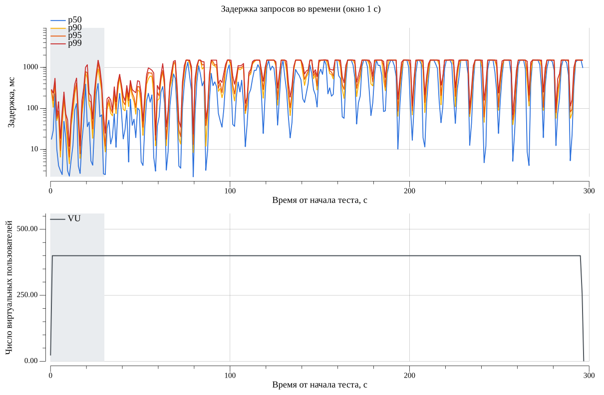
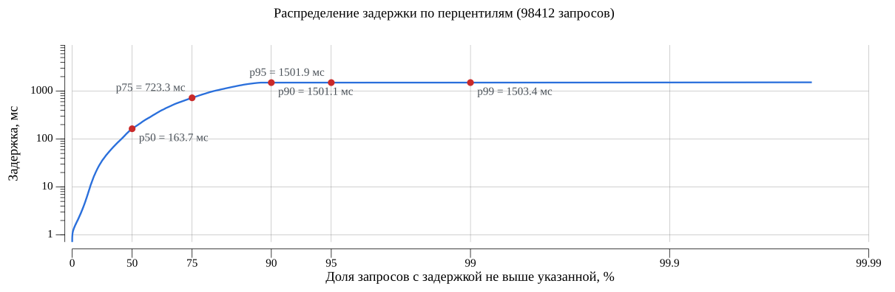
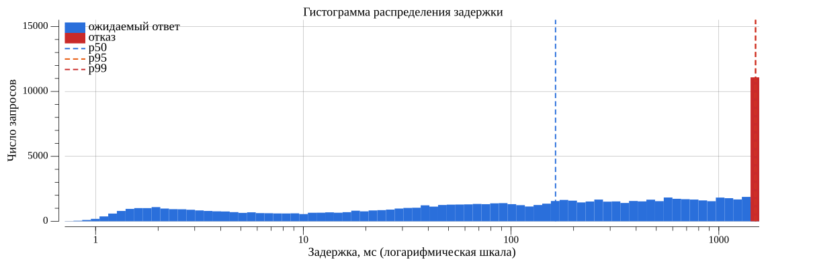
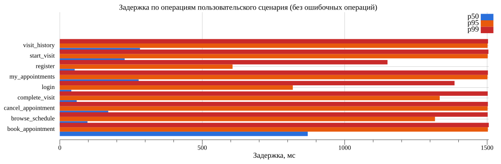
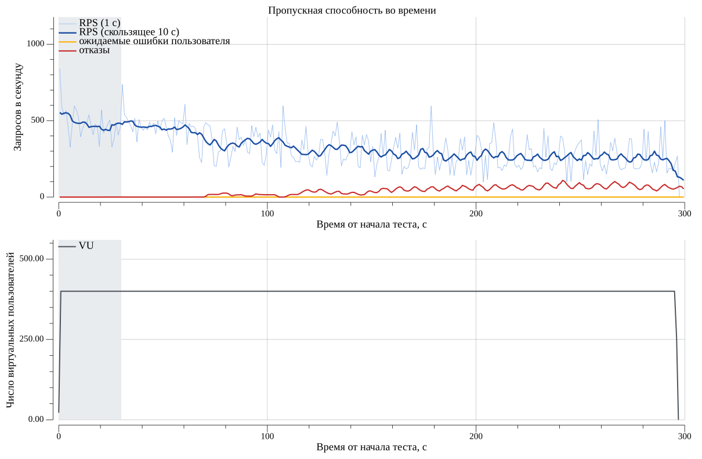
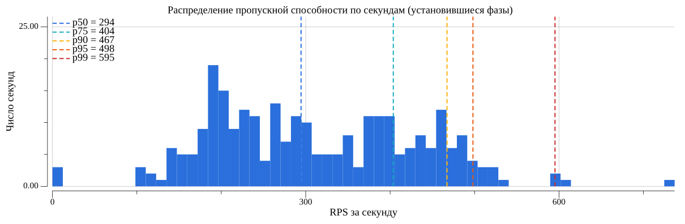
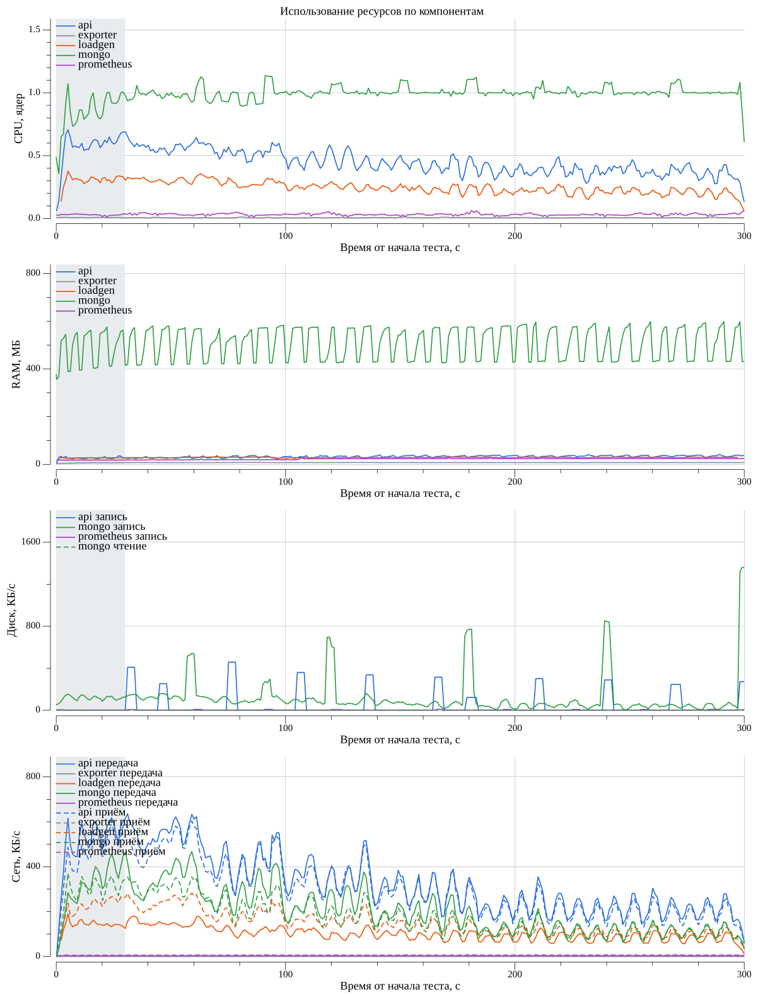

Стабильная нагрузка на пределе
Запросов98412
RPS среднее / медиана328 / 319
p50 / p95 задержки164 / 1502 мс
p99 задержки1503 мс
Отказы11.26%
Ошибочные операции0.00%
Ошибочных операций: задано 0%, фактически 0.0%. Отказы 11.26%. Дрейф p95 между первым и последним отрезком ×1.88, RPS ×0.58. Тренд памяти: api 110 МБ/ч, exporter 1.58 МБ/ч, loadgen 13.1 МБ/ч, mongo 11.7 МБ/ч, prometheus 86.1 МБ/ч.
Задержка
| Задержка, мс | count | min | mean | p50 | p75 | p90 | p95 | p99 | max |
|---|---|---|---|---|---|---|---|---|---|
| Все запросы | 98412 | 0.71 | 435 | 164 | 723 | 1501 | 1502 | 1503 | 1550 |
| Корректные операции | 98412 | 0.71 | 435 | 164 | 723 | 1501 | 1502 | 1503 | 1550 |
| Ошибочные операции | 0 | — | — | — | — | — | — | — | — |



Операции пользовательского сценария
| Операция | count | min | mean | p50 | p75 | p90 | p95 | p99 | max | Отказы | Ошибочные |
|---|---|---|---|---|---|---|---|---|---|---|---|
| book_appointment | 15930 | 1.88 | 836 | 870 | 1502 | 1502 | 1503 | 1506 | 1528 | 37.84% | 0.00% |
| browse_schedule | 15945 | 0.83 | 295 | 97.2 | 414 | 955 | 1317 | 1502 | 1531 | 2.94% | 0.00% |
| cancel_appointment | 2979 | 1.09 | 433 | 170 | 713 | 1501 | 1502 | 1503 | 1509 | 11.38% | 0.00% |
| complete_visit | 5764 | 1.16 | 220 | 59.5 | 236 | 656 | 1334 | 1502 | 1511 | 4.13% | 0.00% |
| login | 15961 | 0.71 | 161 | 40.5 | 170 | 525 | 818 | 1386 | 1538 | 0.54% | 0.00% |
| my_appointments | 15877 | 0.73 | 512 | 277 | 966 | 1455 | 1501 | 1503 | 1540 | 6.68% | 0.00% |
| register | 3331 | 0.79 | 137 | 52.4 | 173 | 296 | 607 | 1150 | 1507 | 0.27% | 0.00% |
| start_visit | 6910 | 1.61 | 501 | 228 | 891 | 1502 | 1502 | 1505 | 1550 | 16.58% | 0.00% |
| visit_history | 15715 | 0.85 | 484 | 282 | 821 | 1501 | 1502 | 1503 | 1529 | 10.88% | 0.00% |

Пропускная способность
| Показатель | count | min | mean | p50 | p75 | p90 | p95 | p99 | max |
|---|---|---|---|---|---|---|---|---|---|
| RPS за секунду | 300 | 0.00 | 328 | 319 | 432 | 486 | 518 | 596 | 841 |


Фазы нагрузки
| Участок | VU | RPS ср. | RPS p50 | RPS p5 | p50 мс | p95 мс | p99 мс | Отказы | CPU api | CPU mongo | RAM api, МБ | SLO |
|---|---|---|---|---|---|---|---|---|---|---|---|---|
| прогрев | 400 | 481 | 476 | 329 | 19.7 | 405 | 718 | 0.01% | 0.56 | 0.84 | 26.5 | да |
| стабильная нагрузка | 400 | 311 | 294 | 146 | 229 | 1502 | 1504 | 13.20% | 0.44 | 1.00 | 32.7 | нет |
Динамика длительной нагрузки
| Участок | VU | RPS ср. | RPS p50 | RPS p5 | p50 мс | p95 мс | p99 мс | Отказы | CPU api | CPU mongo | RAM api, МБ | SLO |
|---|---|---|---|---|---|---|---|---|---|---|---|---|
| 1/5 | 400 | 427 | 458 | 219 | 54.4 | 798 | 1501 | 1.24% | 0.56 | 0.98 | 28.8 | нет |
| 2/5 | 400 | 333 | 324 | 202 | 251 | 1501 | 1503 | 6.26% | 0.49 | 1.01 | 30.9 | нет |
| 3/5 | 400 | 283 | 268 | 146 | 486 | 1502 | 1504 | 16.19% | 0.42 | 1.02 | 34.3 | нет |
| 4/5 | 400 | 265 | 244 | 111 | 540 | 1502 | 1505 | 24.72% | 0.38 | 1.01 | 34.5 | нет |
| 5/5 | 400 | 247 | 222 | 74.1 | 729 | 1502 | 1504 | 27.40% | 0.36 | 1.01 | 35.2 | нет |
| Компонент | Тренд памяти на установившемся участке, МБ/ч |
|---|---|
| api | 110 |
| exporter | 1.58 |
| loadgen | 13.1 |
| mongo | 11.7 |
| prometheus | 86.1 |
Использование ресурсов
| Компонент | Метрика | min | max | mean | median | p95 |
|---|---|---|---|---|---|---|
| api | CPU, ядер | 0.06 | 0.71 | 0.45 | 0.44 | 0.61 |
| api | Троттлинг CPU, с/с | 0.00 | 0.11 | 0.01 | 0.00 | 0.03 |
| api | Чтение с диска, КБ/с | 0.00 | 0.00 | 0.00 | 0.00 | 0.00 |
| api | Запись на диск, КБ/с | 0.00 | 458 | 44.2 | 0.00 | 336 |
| api | RAM (working set), МБ | 4.12 | 41.8 | 32.1 | 33.0 | 38.1 |
| api | Сеть, приём КБ/с | 0.51 | 604 | 310 | 278 | 539 |
| api | Сеть, передача КБ/с | 0.60 | 636 | 336 | 296 | 593 |
| api | Процессы и потоки | 8.00 | 16.0 | 9.36 | 9.00 | 10.0 |
| exporter | CPU, ядер | 0.00 | 0.01 | 0.01 | 0.01 | 0.01 |
| exporter | Троттлинг CPU, с/с | 0.00 | 0.00 | 0.00 | 0.00 | 0.00 |
| exporter | Чтение с диска, КБ/с | 0.00 | 0.00 | 0.00 | 0.00 | 0.00 |
| exporter | Запись на диск, КБ/с | 0.00 | 0.00 | 0.00 | 0.00 | 0.00 |
| exporter | RAM (working set), МБ | 3.57 | 7.97 | 7.31 | 7.49 | 7.73 |
| exporter | Сеть, приём КБ/с | 0.48 | 0.61 | 0.49 | 0.48 | 0.53 |
| exporter | Сеть, передача КБ/с | 3.43 | 4.57 | 4.10 | 4.05 | 4.47 |
| exporter | Процессы и потоки | 5.00 | 6.00 | 5.95 | 6.00 | 6.00 |
| loadgen | CPU, ядер | 0.09 | 0.38 | 0.25 | 0.25 | 0.33 |
| loadgen | Троттлинг CPU, с/с | 0.00 | 0.00 | 0.00 | 0.00 | 0.00 |
| loadgen | Чтение с диска, КБ/с | 0.00 | 0.00 | 0.00 | 0.00 | 0.00 |
| loadgen | Запись на диск, КБ/с | 0.00 | 0.00 | 0.00 | 0.00 | 0.00 |
| loadgen | RAM (working set), МБ | 25.2 | 31.2 | 28.9 | 29.0 | 30.7 |
| loadgen | Сеть, приём КБ/с | 52.4 | 283 | 155 | 145 | 258 |
| loadgen | Сеть, передача КБ/с | 27.9 | 190 | 105 | 103 | 151 |
| loadgen | Процессы и потоки | 8.00 | 9.00 | 8.87 | 9.00 | 9.00 |
| mongo | CPU, ядер | 0.36 | 1.14 | 0.99 | 1.00 | 1.10 |
| mongo | Троттлинг CPU, с/с | 0.02 | 1.22 | 0.87 | 0.91 | 1.08 |
| mongo | Чтение с диска, КБ/с | 0.00 | 2.00 | 0.15 | 0.00 | 1.00 |
| mongo | Запись на диск, КБ/с | 4.00 | 1361 | 118 | 73.3 | 526 |
| mongo | RAM (working set), МБ | 356 | 599 | 506 | 531 | 582 |
| mongo | Сеть, приём КБ/с | 0.62 | 371 | 182 | 157 | 335 |
| mongo | Сеть, передача КБ/с | 0.49 | 467 | 208 | 185 | 401 |
| mongo | Процессы и потоки | 39.0 | 151 | 118 | 126 | 149 |
| prometheus | CPU, ядер | 0.01 | 0.06 | 0.03 | 0.03 | 0.05 |
| prometheus | Троттлинг CPU, с/с | 0.00 | 0.00 | 0.00 | 0.00 | 0.00 |
| prometheus | Чтение с диска, КБ/с | 0.00 | 0.00 | 0.00 | 0.00 | 0.00 |
| prometheus | Запись на диск, КБ/с | 0.00 | 9.00 | 0.96 | 0.00 | 7.00 |
| prometheus | RAM (working set), МБ | 17.6 | 27.8 | 22.2 | 23.8 | 24.4 |
| prometheus | Сеть, приём КБ/с | 3.54 | 7.46 | 6.57 | 6.61 | 7.34 |
| prometheus | Сеть, передача КБ/с | 0.58 | 1.13 | 0.97 | 0.96 | 1.06 |
| prometheus | Процессы и потоки | 7.00 | 14.0 | 8.06 | 8.00 | 8.00 |

Коды ответов
| Код | Запросов |
|---|---|
| 200 | 68339 |
| 201 | 18988 |
| 500 | 11085 |
Окружение прогона
| Компонент | Логические CPU | Квота CPU | Резерв RAM, МБ | Лимит RAM, МБ | Образ | ID образа |
|---|---|---|---|---|---|---|
| api | 0,1 | 1 | 512 | 512 | vitaline-lab4-api:20261113-115801-stable-mitz | 6a4010bb2944 |
| exporter | 6,7 | — | 64 | 64 | vitaline-lab4-exporter:1 | b58c2ecc0ca2 |
| loadgen | 4,5 | — | 2048 | 2048 | vitaline-lab4-loadgen:1 | 0b0105a43a6d |
| mongo | 2,3 | 1 | 1024 | 1024 | mongo:7 | 9896df581dfd |
| prometheus | 6,7 | — | 768 | 768 | prom/prometheus:v3.5.0 | 63805ebb8d2b |